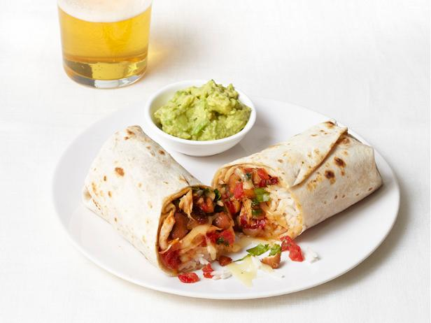

How to: Chicken Burrito

Here is a simple chicken burrito recipe. It is very simple to make, and takes very little to no time.
These low calorie burrito's pack a punch of flavor and are great for meal prep.
Ingredients:
- Chicken Breast
- Chili Powder
- Ground Cumin
- Salt
- Ground Pepper
- Olive Oil
- Spanish Rice
- Black Beans
- Cheddar Cheese
- Flour Tortillas
Cooking Steps:
- Season the chicken with chili, cumin, salt and pepper.
- In a large skillet over medium heat add olive oil and chicken. Cook the chicken until tender, around 7 minutes.
- Remove from the pan and place on a cutting board to rest for about 5 minutes. Then slice into strips. In the meantime, cook your Spanish Rice according to package directions - or make this delicious homemade Spanish Rice. Allow to cool.
- Using a fine-mesh sieve, drain and rinse black beans until rinse water runs clear. Set aside and allow to drip until mostly dry.
- Assemble your burritos. Place 3 tablespoons of Spanish rice and 4-5 slices of chicken, 2 tablespoons black beans, and about 2 tablespoons shredded cheese to each tortilla.
- Pull in each end of the tortilla and roll up tightly into a burrito shape.
- Enjoy!
Return to main page